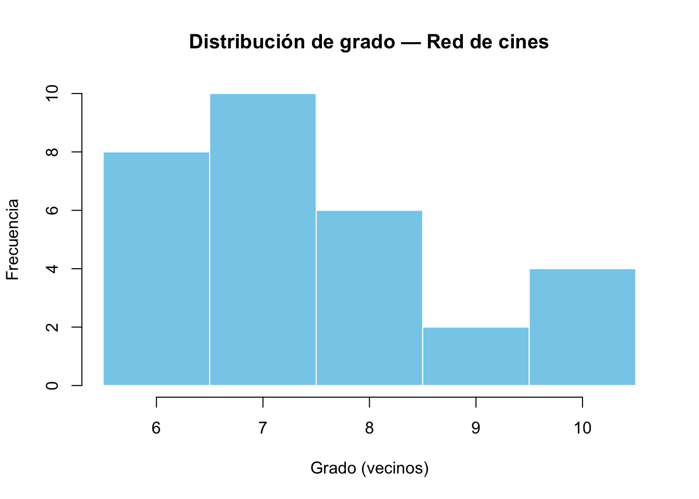
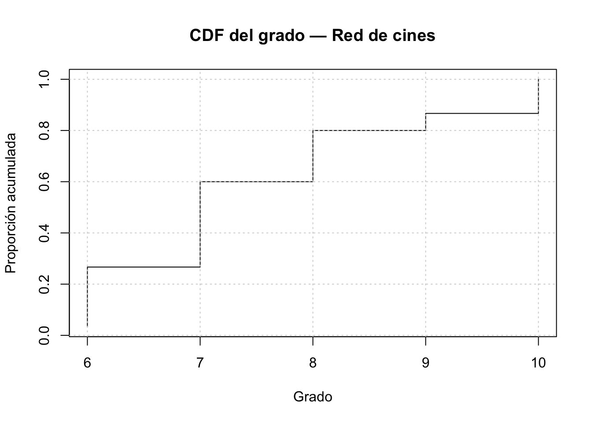

library(geosphere) # distHaversine
library(igraph) # grafos y algoritmos
library(tidyverse) # manipulación
library(leaflet) # mapas interactivos
library(RColorBrewer) # paletas
library(htmlwidgets) # saveWidget
library(scales) # rescale
library(data.table) # rápido cuando convenga
library(ggraph)Est6-descriptiva
# -------------------------
# 1) Cargar datos (ajusta el path si hace falta)
# -------------------------
df <- read_csv("cine_data.csv", show_col_types = FALSE)
# Asegurarnos columnas y ver primeras filas
glimpse(df)Rows: 30
Columns: 9
$ id <chr> "CINE001", "CINE002", "CINE003", "CINE004", "CINE005", "CINE00…
$ name <chr> "Cine Colombia Andino", "Cine Colombia Avenida Chile", "Royal …
$ rating <dbl> 4.7, 4.6, 4.5, 4.6, 4.4, 4.8, 4.8, 4.7, 4.3, 4.7, 4.6, 4.5, 4.…
$ reviews <dbl> 12893, 10231, 7842, 11672, 5211, 2157, 3381, 1921, 6620, 15322…
$ rooms <dbl> 3, 3, 2, 3, 2, 2, 2, 2, 2, 3, 3, 2, 3, 2, 2, 3, 2, 2, 1, 1, 2,…
$ lat <dbl> 4.668201, 4.649821, 4.627221, 4.645311, 4.612001, 4.711012, 4.…
$ lon <dbl> -74.05311, -74.06391, -74.11819, -74.12482, -74.12298, -74.062…
$ address <chr> "Centro Comercial Andino, Bogotá", "Av. NQS # 72-24, Bogotá", …
$ tags <chr> "movie_theater,entertainment,point_of_interest", "movie_theate…df %>% slice_head(n=6)# A tibble: 6 × 9
id name rating reviews rooms lat lon address tags
<chr> <chr> <dbl> <dbl> <dbl> <dbl> <dbl> <chr> <chr>
1 CINE001 Cine Colombia Andino 4.7 12893 3 4.67 -74.1 Centro… movi…
2 CINE002 Cine Colombia Avenida … 4.6 10231 3 4.65 -74.1 Av. NQ… movi…
3 CINE003 Royal Films Plaza Cent… 4.5 7842 2 4.63 -74.1 Plaza … movi…
4 CINE004 Cinemark Multiplaza 4.6 11672 3 4.65 -74.1 Centro… movi…
5 CINE005 Procinal Las Américas 4.4 5211 2 4.61 -74.1 Centro… movi…
6 CINE006 Cinema Paraíso 4.8 2157 2 4.71 -74.1 Cl. 12… movi…# -------------------------
# 2) Preparar datos con lat/lon válidos
# -------------------------
df_geo <- df %>%
filter(!is.na(lat) & !is.na(lon)) %>%
mutate(.node = row_number()) # nodo 1..n usado en igraph
coords <- df_geo %>% select(lon, lat) %>% as.matrix() # (lon, lat) required by geosphere
n <- nrow(df_geo)
n[1] 30# -------------------------
# 3) k-NN usando distancia haversine (idéntico a sklearn NearestNeighbors(metric="haversine"))
# -------------------------
k <- 6 # el mismo que usaste en Python
# 3.1) Matriz de distancias (en metros) — ojo: para n grande puede ser pesado
dist_mat_m <- distm(coords, fun = distHaversine) # n x n matrix
diag(dist_mat_m) <- Inf # evitar el self-nearest
# 3.2) Para cada fila tomar los k menores
knn_idx <- apply(dist_mat_m, 1, function(r) order(r)[1:k]) # devuelve índices (1..n)
knn_dist_m <- apply(dist_mat_m, 1, function(r) sort(r)[1:k]) # distancias en m
# Si prefieres tener matrices con filas = observaciones:
knn_idx <- t(knn_idx) # n x k (cada fila: vecinos de i)
knn_dist_m <- t(knn_dist_m) # n x k# -------------------------
# 4) Construcción del grafo (no dirigido), con peso = distancia en km
# -------------------------
edges <- vector("list", n) # recolectar pares i-j
edge_df <- tibble(from = integer(), to = integer(), weight_km = double())
for (i in seq_len(n)) {
neighs <- knn_idx[i, ]
dists_m <- knn_dist_m[i, ]
for (jpos in seq_along(neighs)) {
j <- neighs[jpos]
if (i != j) {
edge_df <- edge_df %>% add_row(from = i, to = j, weight_km = dists_m[jpos] / 1000)
}
}
}
# Hacer único (sin duplicados i-j y j-i)
edge_df <- edge_df %>%
mutate(a = pmin(from,to), b = pmax(from,to)) %>%
distinct(a,b, .keep_all = TRUE) %>%
select(from = a, to = b, weight_km)
# Crear igraph (nodos 1..n)
G <- graph_from_data_frame(
d = edge_df,
directed = FALSE,
vertices = df_geo %>% mutate(name = .node) %>% select(name, everything())
)
V(G)$name <- df_geo$name # nombre legible
V(G)$rating <- df_geo$rating
V(G)$reviews <- df_geo$reviews
V(G)$rooms <- df_geo$rooms
V(G)$lon <- df_geo$lon
V(G)$lat <- df_geo$lat
# verificar
cat("Nodos:", vcount(G), "Aristas:", ecount(G), "\n")Nodos: 30 Aristas: 112 # -------------------------
# 5) Estadísticas básicas y centralidades
# -------------------------
n <- vcount(G)
m <- ecount(G)
dens <- edge_density(G)
deg <- degree(G)
deg_mean <- mean(deg)
deg_median <- median(deg)
deg_max <- max(deg)
# centralidades
deg_centrality <- centr_degree(G, mode="all", normalized=TRUE)$res
clo <- closeness(G, normalized = TRUE)
bet_raw <- betweenness(G, directed = FALSE)
bet_norm <- if (n >= 3) bet_raw / ((n-1)*(n-2)/2) else bet_raw
# tabla de métricas
metrics_tbl <- tibble(
node = as.integer(V(G)),
id = df_geo$id,
name = V(G)$name,
degree = deg,
deg_centrality = deg_centrality,
closeness = clo,
betweenness = bet_norm,
rating = V(G)$rating,
reviews = V(G)$reviews
) %>% arrange(desc(betweenness))
# mostrar top-10 en Quarto
metrics_tbl %>% slice_head(n = 10)# A tibble: 10 × 9
node id name degree deg_centrality closeness betweenness rating reviews
<int> <chr> <chr> <dbl> <dbl> <dbl> <dbl> <dbl> <dbl>
1 14 CINE0… Ciné… 6 6 0.492 0.246 4.4 7633
2 12 CINE0… Cine… 8 8 0.460 0.159 4.5 9021
3 1 CINE0… Cine… 8 8 0.475 0.139 4.7 12893
4 17 CINE0… Cine… 7 7 0.492 0.112 4.5 10442
5 11 CINE0… Cine… 9 9 0.439 0.0840 4.6 12210
6 4 CINE0… Cine… 10 10 0.453 0.0805 4.6 11672
7 25 CINE0… Cine… 10 10 0.453 0.0805 4.3 3111
8 7 CINE0… Cine… 6 6 0.387 0.0695 4.8 3381
9 20 CINE0… Cine… 8 8 0.468 0.0665 4.4 4411
10 8 CINE0… Cine… 7 7 0.453 0.0603 4.7 1921# -------------------------
# 6) Componentes, clustering, caminos
# -------------------------
comps <- components(G)
comp_sizes <- comps$csize
cat("Componentes:", length(comp_sizes), "tamaños:", comp_sizes, "\n")Componentes: 1 tamaños: 30 # Subgrafo gigante (para ASP y diametro)
giant_comp_id <- which.max(comp_sizes)
giant_nodes <- which(comps$membership == giant_comp_id)
G_giant <- induced_subgraph(G, giant_nodes)
asp <- mean_distance(G_giant)
diam <- diameter(G_giant)
cat("ASP (gigante):", asp, " | Diametro:", diam, "\n")ASP (gigante): 2.452874 | Diametro: 5 # clustering promedio (transitivity global)
clust_prom <- transitivity(G, type = "global")
cat("Clustering promedio:", clust_prom, "\n")Clustering promedio: 0.652 # -------------------------
# 7) Detección de comunidades (Louvain) y modularidad
# -------------------------
if (!is_weighted(G)) {
# igraph's cluster_louvain expects weights optionally; here usamos peso = weight_km si existe
if ("weight_km" %in% edge_attr_names(G)) {
E(G)$w_inv <- 1 / (E(G)$weight_km + 1e-6)
com <- cluster_louvain(G, weights = E(G)$w_inv)
} else {
com <- cluster_louvain(G)
}
} else {
com <- cluster_louvain(G, weights = E(G)$weight_km)
}
membership <- membership(com)
Q <- modularity(com)
cat("Comunidades:", length(sizes(com)), "| Modularidad Q:", Q, "\n")Comunidades: 5 | Modularidad Q: 0.6094776 # añadir membresía a tabla
metrics_tbl <- metrics_tbl %>% mutate(community = membership)library(knitr)
top_bet <- metrics_tbl %>%
arrange(desc(betweenness)) %>%
slice_head(n = 10)
kable(top_bet, caption = "Top-10 nodos por betweenness")| node | id | name | degree | deg_centrality | closeness | betweenness | rating | reviews | community |
|---|---|---|---|---|---|---|---|---|---|
| 14 | CINE014 | Cinépolis Diverplaza | 6 | 6 | 0.4915254 | 0.2457004 | 4.4 | 7633 | 1 |
| 12 | CINE012 | Cineland Titan Plaza | 8 | 8 | 0.4603175 | 0.1592661 | 4.5 | 9021 | 2 |
| 1 | CINE001 | Cine Colombia Andino | 8 | 8 | 0.4754098 | 0.1391286 | 4.7 | 12893 | 3 |
| 17 | CINE017 | Cinemark Floresta | 7 | 7 | 0.4915254 | 0.1119652 | 4.5 | 10442 | 4 |
| 11 | CINE011 | Cinemark San Rafael | 9 | 9 | 0.4393939 | 0.0840235 | 4.6 | 12210 | 3 |
| 4 | CINE004 | Cinemark Multiplaza | 10 | 10 | 0.4531250 | 0.0805382 | 4.6 | 11672 | 5 |
| 25 | CINE025 | Cinema Tintal | 10 | 10 | 0.4531250 | 0.0805382 | 4.3 | 3111 | 3 |
| 7 | CINE007 | Cine Tonalá Bogotá | 6 | 6 | 0.3866667 | 0.0694583 | 4.8 | 3381 | 1 |
| 20 | CINE020 | Cinema Galerías | 8 | 8 | 0.4677419 | 0.0664775 | 4.4 | 4411 | 3 |
| 8 | CINE008 | Cinema Andino Arte | 7 | 7 | 0.4531250 | 0.0603290 | 4.7 | 1921 | 5 |
# -------------------------
# 9) Plots: distribución de grados y CDF
# -------------------------
# Histograma de grado
hist(
deg,
breaks = seq(min(deg)-0.5, max(deg)+0.5, by=1),
main = "Distribución de grado — Red de cines",
xlab = "Grado (vecinos)",
ylab = "Frecuencia",
col = "skyblue",
border = "white"
)
# CDF del grado
gr_sorted <- sort(deg)
cdf <- seq_along(gr_sorted) / length(gr_sorted)
plot(
gr_sorted, cdf,
type = "s",
main = "CDF del grado — Red de cines",
xlab = "Grado",
ylab = "Proporción acumulada"
)
grid()